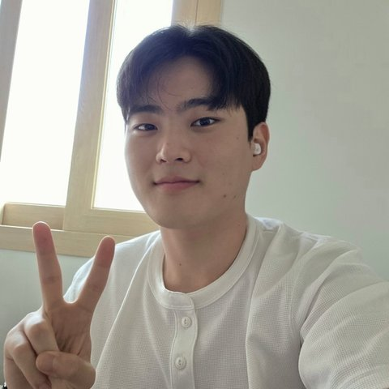

Efficient LLM inference: KV cache quantization and pruning.
Undergraduate Researcher · SYMPLE Lab, GIST
I am a senior undergraduate in Electrical Engineering and Computer Science at GIST and a research intern at SYMPLE Lab, advised by Prof. Sangjin Kim.
I work on KV cache optimization for long-context LLM inference, and I am expanding toward on-device inference and NPU design.

Efficient LLM inference: KV cache quantization and pruning.
Encodes GIST's curriculum rules, which change by admission year and major, into verifiable checks on uploaded transcripts. Used by about 51% of GIST undergraduates across four rebuilds.
Pipeline that scrapes National Assembly bills and restructures them with GPT, plus an embedding-based issue-cluster visualization.